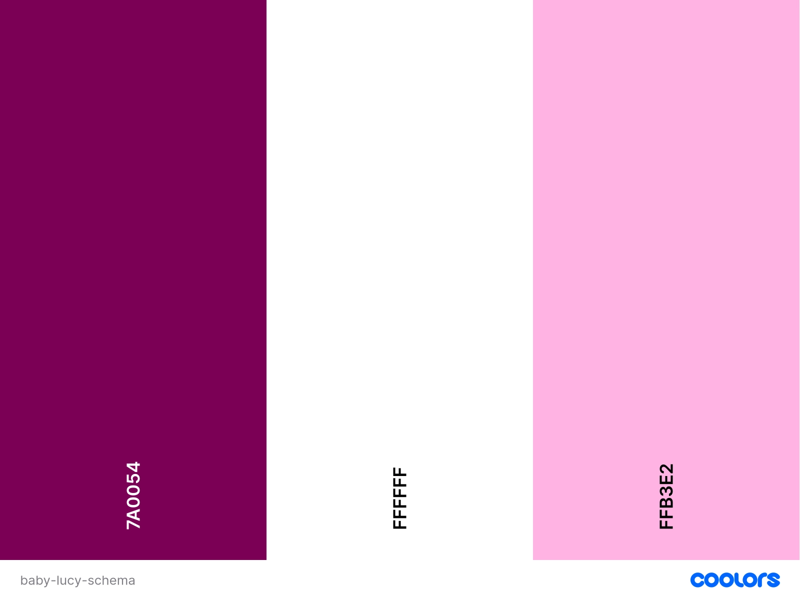

Site Name
Baby Lucy StoreThis is a store located in Chincha City that specializes in showing and selling baby clothes for newborns up to 4 years old
domain availability:baby-lucy.store
Site Purpose
For the Baby Lucy StoreThis site serves as a support hub for early motherhood, offering high-quality, essential clothing from Baby Lucy (Pima cotton) alongside practical customer solutions designed to simplify the day-to-day lives of new mothers.
Scenarios
For the Baby Lucy StoreWhat is the best clothing for my baby?
Which type of textile is best for my baby's skin?
What things will I need for the day my baby is born
How many outfits of each size should I buy?
How should I wash my baby's new clothes before the first use?
Color Schema
Background color: #FFFFFF(main)
Secondary Background color: #FFB3E2(heading and footer)
text color: #7A0054
accent color:
Typography
Architects daughter:(heading, main and footer)
Quicksand:(paragraph)